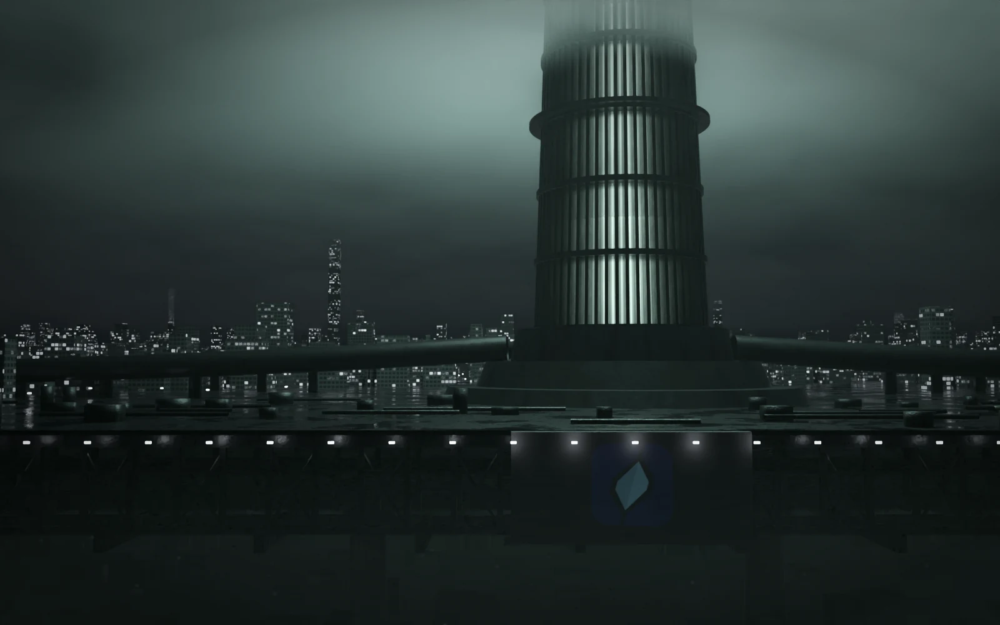

Night, from a rebels' gantry. Across the gap between two plates of a vast city, a reactor stack rises out of the upper plate and draws a cold green-white light up its vents into the clouds. The rebels have projected the Antimony mark onto the plate's edge below it.

Software for the people who make the work